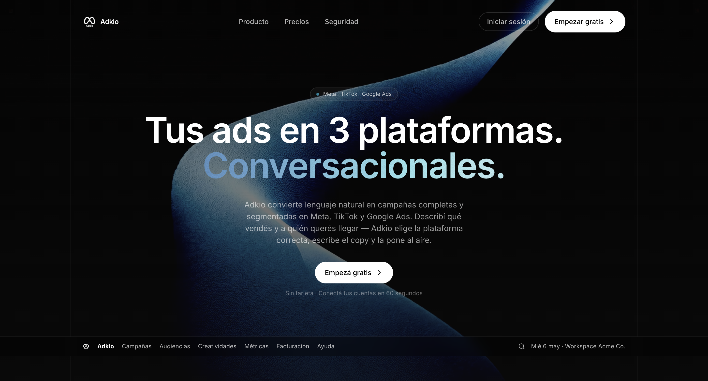
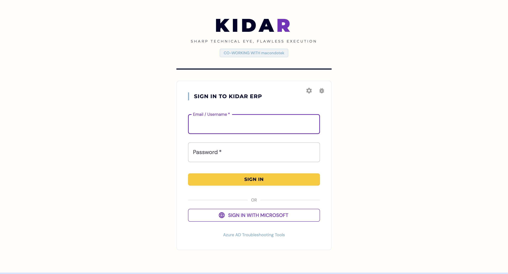

Backend + AI Agentic specialist. I build scalable systems with Python, FastAPI, AWS and Anthropic AI that generate direct value for companies.
My passion for solving complex business problems
I am a Junior Software Engineer with 4 months of professional experience at Kidar, where I am building the corporate ERP from scratch. My specialty is solving three types of problems:
1) Direct Needs: I identify and solve situations that cost companies money/time, generating direct ROI.
2) Agentic Problems: I create solutions with AI Agents that automate complex processes.
3) Mathematical Problems: Transactional and banking logic with precision.
Full-Stack Developer with expertise in Backend (Python/FastAPI), but capable of handling the entire stack: Frontend (React), Cloud (AWS), and AI (Anthropic/AWS Models).
Tools and technologies I master
Spec-Driven Development
AI Development Life Cycle
My professional journey
Responsibilities: Software architecture with Clean Architecture, requirements engineering, AWS infrastructure (ECS, EC2, S3, ALB, API Gateway, Aurora), and agentic flow design with Bedrock.
Impact: Scalable and maintainable system from scratch. Competencies developed in architecture, requirements and AWS enterprise-grade.
Work that demonstrates my expertise


Enterprise system built with clean architecture, AWS integration, and agentic flows for process automation.
*Corporate project - Private code
I am available for opportunities, technical consultations and collaborations in AI, backend and cloud architecture.